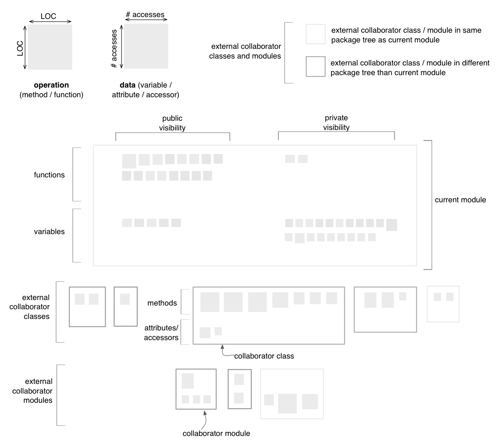

Module Map
The Module Map shows the internals of a single module along with its collaborators. It is only available for C and C++ systems.
Entities and Layout
The layout of the Module Map consists of a series of layers, as shown in
the figure below:
- the first layer from the top represents the current module. This layer is divided vertically in two areas corresponding
to functions and variables, as well as horizontally into two areas,
corresponding to public and
private visibility.
- the second layer contains external collaborator classes and
interfaces.
- the third layer contains
external collaborator modules (files containing global functions and
variables)
Note that each class, interface or module, showing up in the last two
layers, is represented as a rectangle that contains two sub-regions of
smaller rectangles, denoting operations and data respectively.
Interfaces are rendered using a dotted border. Unlike in the case
of Package Maps and Inheritance
Maps, the sizes of
the rectangles representing classes, interfaces and modules are not
linked to any particular
metric. These rectangles merely act as containers for the enclosed
operations and data. However, the sizes of the squares representing
operations and data are given by the LOC
metric (for operations) and by
the total number of accesses (for data).

Quality perspectives
Cohesion,
Complexity, Coupling,
Design Flaws, Encapsulation
Metrics used
LOC